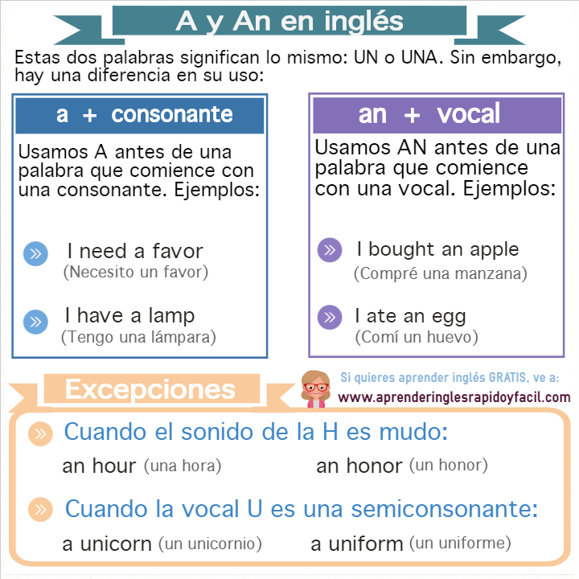

En esta lección vamos a aprender sobre el artículo indefinido A y AN en inglés. Este tema también es conocido como Definite Article.
¿Qué es el artículo indefinido A y AN en inglés?
Es una palabra que se refiere a algo que no es específico. Observa el siguiente ejemplo:
I need a pencil / Necesito un lápiz
En esta oración alguien necesita UN lápiz. No un lápiz en específico, más bien cualquier lápiz en el mundo.
Significado de A y AN
El significado de estas palabras en español es el mismo: UN o UNA. Debemos usar estas palabras en singular únicamente. Asimismo, el significado de este artículo no es UNOS o UNAS. Ejemplos:
She has a bicycle: Ella tiene una bicicleta
She has a brother: Ella tiene un hermano
En la siguiente imagen te mostraremos las reglas para usar estos respectivos artículos:

Para profundizar en el tema, observa el siguiente video: